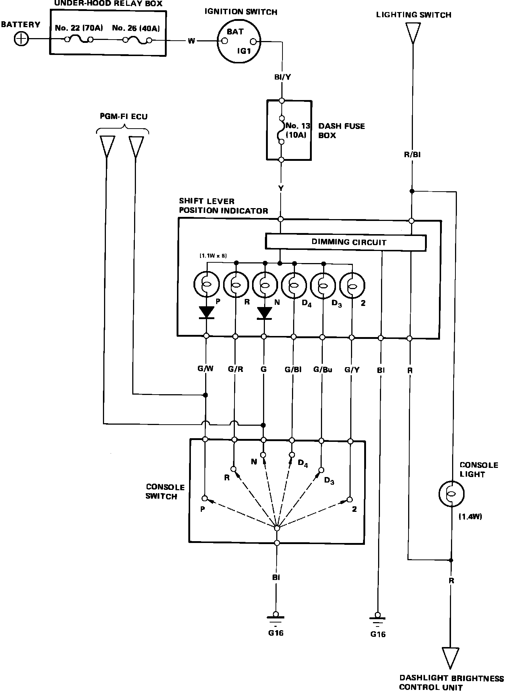

Operation CHARM
: Car repair manuals for everyone.
Home
>>
Acura
>>
1986
>>
Legend V6-2494cc 2.5L SOHC FI
>>
Repair and Diagnosis
>>
Transmission and Drivetrain
>>
Transmission Control Systems
>>
Lamps and Indicators - Transmission and Drivetrain
>>
Lamps and Indicators - A/T
>>
Shift Indicator - A/T
>>
Diagrams
>>
Electrical Diagrams
Electrical Diagrams
Fig. 31 Shift Lever Position Indicator Wiring Circuit.:
